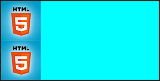
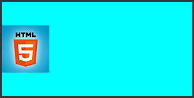
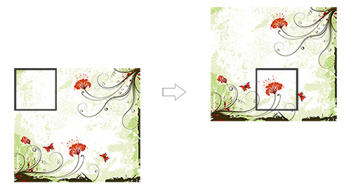
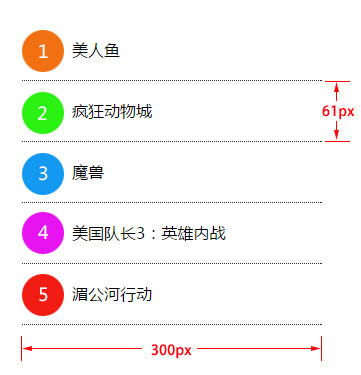

background属性
属性解释
background属性是css中应用比较多，且比较重要的一个属性，它是负责给盒子设置背景图片和背景颜色的，background是一个复合属性，它可以分解成如下几个设置项：
- background-image 设置背景图片地址
- background-position 设置背景图片的位置
- background-repeat 设置背景图片如何重复平铺
- background-color 设置背景颜色
可以将上面的属性设置用background属性合并成一句：
“background:url(bgimage.gif) left center no-repeat #00FF00”
举例：
下面这些例子使用下面这张图片做为背景图：
1、“background:url(bg.jpg)”，默认设置一个图片地址，图片会从盒子的左上角开始将盒子铺满。

2、“background:cyan url(bg.jpg) repeat-x”，横向平铺盒子，盒子其他部分显示背景颜色“cyan”。

3、“background:cyan url(bg.jpg) repeat-y”，纵向平铺盒子，盒子其他部分显示背景颜色“cyan”。

4、“background:cyan url(bg.jpg) no-repeat”，背景不重复，背景和盒子左上角对齐，盒子其他部分显示背景颜色“cyan”。

5、“background:cyan url(bg.jpg) no-repeat left center”，背景不重复，背景和盒子左中对齐，盒子其他部分显示背景颜色“cyan”。

6、“background:cyan url(bg.jpg) no-repeat right center”，背景不重复，背景和盒子右中对齐，也就是背景图片的右边对齐盒子的右边，盒子其他部分显示背景颜色“cyan”。

例子说明：
background-position的设置，可以在水平方向设置“left”、“center”、“right”，在垂直方向设置“top”、“center”、“bottom”，除了设置这些方位词之外，还可以设置具体的数值。
比如说，我们想把下边的盒子用右边的图片作为背景，并且让背景显示图片中靠近底部的那朵花：
用上面中间那张图片作为左边那个比它尺寸小的盒子的背景，上面右边的实现效果设置为：“background:url(location_bg.jpg) -110px -150px”，第一个数值表示背景图相对于自己的左上角向左偏移110px，负值向左，正值向右，第二个数值表示背景图相对于自己的左上角向上偏移150px，负值向上，正值向下。
实现原理示意图：

理解练习：
通过雪碧图制作如下布局：
